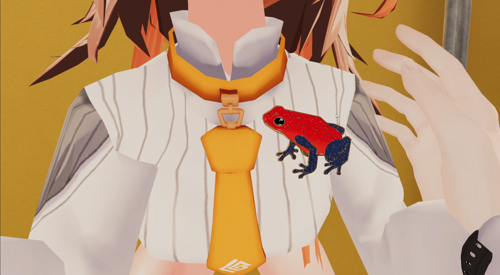
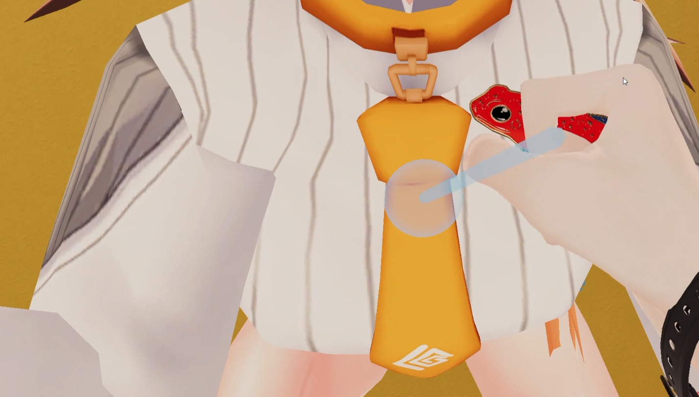

STEP 3 / 5
遊び方（来場者の操作）
ワールドに来た人は、こう操作します。来場者向けの説明として、そのまま掲示してもOKです。
全体の流れは 掴む → 体に近づける → 離して装着 → 外す の4ステップです。
- 掴む
ピンバッジを掴む（デスクトップ：左クリック ／ VR：グリップ）。 - 体に近づける
装着できる位置に近づくと緑のマーカーが出ます（＝ここに付けられる合図）。
- 離して装着
緑の状態で手を離すと、マーカーが出ているボーンに装着されて体に追従します。
- 外す
装着済みのピンバッジを掴んで、体から離して手を離すと外れます（その場に置かれます）。
補足説明
リセット
付属のリセットボタンを押すと、ピンバッジが最初の表示位置に戻ります。
ボーンを固定する
掴んでいる間に USE（デスクトップ：規定キー ／ VR：トリガー）を押すと、その瞬間のボーンに固定できます。もう一度USEで解除（自動で最寄りを選ぶ状態に戻る）。固定後は、ボーンから離れた位置にも置けます。
